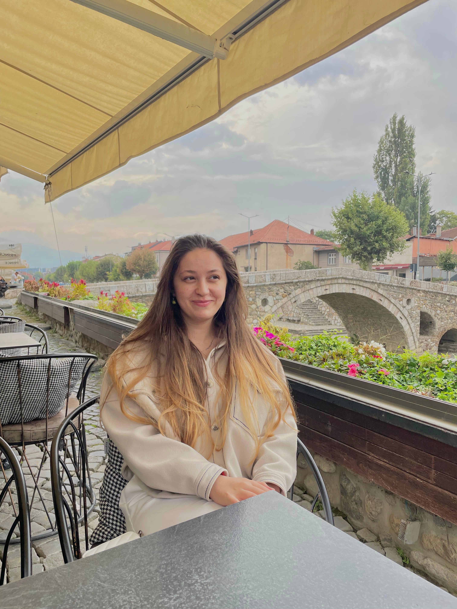

Sezgisel
beslenme
İçsel sinyallerinizi yeniden duyabilmek, bedeninizle daha güvenli bir ilişki kurabilmek için.
öne çıkan alanSezgisel beslenme odağında online danışmanlık
Ergen ve yetişkin danışanlarla; beden imajı, yeme davranışları ve sezgisel beslenme odağında, kendinizle daha şefkatli bir ilişki kurmanız için yanınızdayım.

Sinem YakarMerhaba, ben Sinem
Ben Psikolog Sinem Yakar. Çalışmalarımın merkezinde, ergen ve yetişkin danışanlarla yürüttüğüm sezgisel beslenme, beden imajı ve yeme davranışları odaklı danışmanlık görüşmeleri yer alıyor.
Bilişsel Davranışçı yaklaşımı temel alarak kaygı, depresif süreçler ve OKB ile ilgili yolculuklara da eşlik ediyorum. Görüşmelerimde katı kurallardan çok bedeninizin sinyallerini, deneyiminizi ve ihtiyaçlarınızı birlikte anlamaya önem veriyorum.
Denetimli Serbestlik Müdürlüğü'ndeki stajımda adli psikoloji ve vaka yönetimi alanlarında deneyim kazandım; Berge Psikoloji ve Bilgi Dem Akademi'deki çalışmalarımda okul psikolojisinden bireysel danışmanlığa uzanan farklı alanlarda görev aldım. Psychology Times ve Imago Psikoloji gibi platformlarda yazılar kaleme alıyorum.
Tanışmak için yazınErgen ve yetişkinlerle yapılandırılmış çalışmalar
Beden imajı ve yeme davranışları üzerine
Kişiye özel, güvenli online görüşmeler
Sezgisel beslenme odağında çalışma alanları
Ergen ve yetişkin danışanlarla; beden, yeme davranışları ve duygusal süreçler üzerine, sizin ihtiyaçlarınız ve hızınız doğrultusunda çalışıyoruz.
İçsel sinyallerinizi yeniden duyabilmek, bedeninizle daha güvenli bir ilişki kurabilmek için.
öne çıkan alanZihnin hızlandığında durabilmek ve kendine alan açabilmek için.
Zorlayıcı duygularla baş ederken küçük adımları birlikte fark etmek için.
Düşünce ve davranış döngülerini anlamak, kendinize daha çok yaklaşabilmek için.
Ergenlerin kendi seslerini bulabilecekleri, ebeveynlerin de sürece eşlik edebileceği bir alan.

01 · Sezgisel beslenme
Sezgisel beslenme; dışarıdan gelen katı kurallar yerine açlık, tokluk, haz ve ihtiyaç sinyallerinizi yeniden fark etmeye alan açan bir yaklaşımdır.
Bu süreçte beden imajı, yeme davranışları ve diyet kültürünün üzerinizde bıraktığı izleri birlikte, yargılamadan ele alabiliriz. Amaç bir kalıba sığmak değil; bedeninizle daha güvenli ve barışçıl bir bağ kurabilmek.
Yemekle ilişkiniz, kendinizle ilişkinizden ayrı değildir.
Süreç nasıl ilerliyor?
Görüşmeler online olarak, güvenli görüntülü görüşme platformu üzerinden gerçekleşir. Her adım birlikte ve sizin hızınızda şekillenir.
İhtiyacınızı, beklentinizi ve başvuru nedeninizi konuştuğumuz bu görüşme, sürecin doğal ve önemli bir parçasıdır.
Size uygun çalışma biçimini ve görüşme sıklığını birlikte belirleyelim.
Güvenli, gizli ve size ait bir alanda sürecinizi sürdürelim.
Merak ettikleriniz
Aklınızdaki soru burada yoksa, bana yazarak doğrudan sorabilirsiniz.
Sorunuzu iletinGörüşmeler genellikle 50 dakika sürer. İlk tanışma görüşmesinin akışı, ihtiyacınıza göre birlikte şekillenir.
İlk görüşmede sizi ve başvuru nedeninizi tanımaya, beklentilerinizi anlamaya ve nasıl ilerleyebileceğimizi konuşmaya zaman ayırıyoruz.
Ergenin yaşı ve ihtiyacına göre ebeveynle kısa bilgilendirme görüşmeleri planlanabilir. Sürecin sınırlarını ve gizliliğini birlikte netleştiririz.
Hayır. Bu yaklaşım katı listeler ya da hedefler yerine, bedeninizin sinyallerini ve yeme deneyiminizi fark etmeye odaklanır.
Görüşmeler güvenli bir bağlantı üzerinden gerçekleştirilir. Kişisel verilerin işlenmesine ilişkin ayrıntıları gizlilik metninde bulabilirsiniz.
Bir yerden başlamak
İhtiyacınızı kısaca anlatarak ön görüşme talebinizi iletebilirsiniz. Size en kısa sürede dönüş yapacağım.